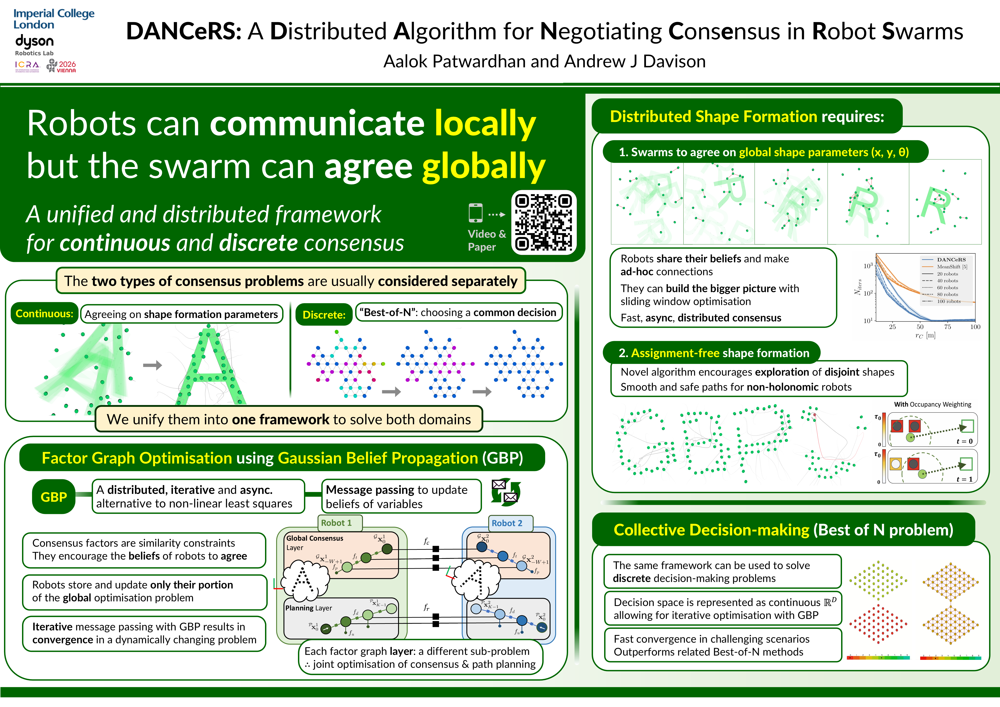

DANCeRS: A Distributed Algorithm for Negotiating Consensus in Robot Swarms
IEEE International Conference on Robotics and Automation (ICRA) · 2026
Imperial College London · Dyson Robotics Lab
Overview
Robot swarms require cohesive collective behaviour to address diverse challenges, including shape formation and decision-making. Existing approaches often treat consensus in discrete and continuous decision spaces as distinct problems. We present DANCeRS, a unified, distributed algorithm leveraging Gaussian Belief Propagation (GBP) to achieve consensus in both domains. By representing a swarm as a factor graph our method ensures scalability and robustness in dynamic environments, relying on purely peer-to-peer message passing. We demonstrate the effectiveness of our general framework through two applications where agents in a swarm must achieve consensus on global behaviour whilst relying on local communication. In the first, robots must perform path planning and collision avoidance to create shape formations. In the second, we show how the same framework can be used by a group of robots to form a consensus over a set of discrete decisions. Experimental results highlight our method's scalability and efficiency compared to recent approaches to these problems making it a promising solution for multi-robot systems requiring distributed consensus. We encourage the reader to see the supplementary video demo.
Video Demonstration
Poster

Cite
@inproceedings{patwardhan2026dancers,
title = {DANCeRS: A Distributed Algorithm for Negotiating Consensus in Robot Swarms},
author = {Patwardhan, Aalok and Davison, Andrew J.},
booktitle = {IEEE International Conference on Robotics and Automation (ICRA)},
year = {2026}
}